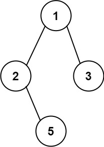

257. 二叉树的所有路径
DFS 带着字符串前缀走：进结点接上值，走到没有孩子的叶子就把整条路径收进答案。
思路
dfs(cur, path)：path是「1->2->」形式的前缀；进结点先path += cur.val接上自己。- 左右孩子都空 = 叶子：
ans.add(path)定格收工；否则把path + "->"传给左右两路递归。 - 用字符串拼接当回溯：Java 字符串不可变，
path + "->"天然各走各的，不用显式撤销；想省分配可换StringBuilder配 delete。
图解
最优解
1import java.util.*;2 3class Solution {4 public List<String> binaryTreePaths(TreeNode root) {5 List<String> ans = new ArrayList<>();6 dfs(root, "", ans);7 return ans;8 }9 10 // path：走到 cur 为止的「1->2->」形式前缀；到叶子接上自己就是一条完整路径11 private void dfs(TreeNode cur, String path, List<String> ans) {12 if (cur == null) return;13 path += cur.val;14 if (cur.left == null && cur.right == null) {15 ans.add(path); // 叶子：路径在这里定格16 return;17 }18 dfs(cur.left, path + "->", ans);19 dfs(cur.right, path + "->", ans);20 }21}题目
给你一个二叉树的根节点 root。
按 任意顺序 ，返回所有 从根节点到叶子节点 的路径。
叶子节点 是指没有子节点的节点。
示例 1：

输入：root = [1,2,3,null,5] 输出：["1->2->5","1->3"]
示例 2：
输入：root = [1] 输出：["1"]
提示：
- 树中节点的数目在范围
[1, 100]内 -100 <= Node.val <= 100
题面取自力扣当前版本。
数据快照 2026-11-04。题面版权归力扣所有，本站点仅供本人学习使用，请勿对外发布。